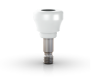
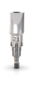

Cicatrizador
Ø 3,75/4,3/5,0 TRANSMUCOSAL
Desenvolvido em cerâmica ou PEEK* para preparar o perfil de emergência
durante
a fase de cicatrização para permitir o posicionamento dos componentes
definitivos.
*cerâmica para Ø 3,75/4,3 e PEEK para Zi Transmucosal Ø 5,0.

Fluxo de trabalho digital
Ø 3,75/4,3/5,0 TRANSMUCOSAL
O Scanbody permite acesso ao fluxo de trabalho de restauração digital
no nível do implante. Esta solução é compatível com os principais
softwares de CAD no mercado.
